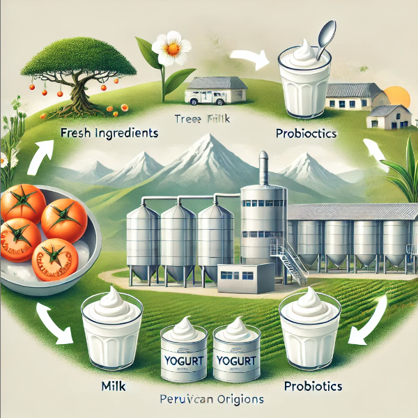

Sachtom’s Yogurt de Sacha Tomate ofrece una experiencia única: nutritivo, delicioso y responsable con el medio ambiente.
Protección celular para un bienestar integral.
Nutre tu cuerpo con lo mejor de la naturaleza.
Una opción saludable y ligera para tu dieta.
Forma parte de nuestra misión de fomentar la salud y la sostenibilidad.